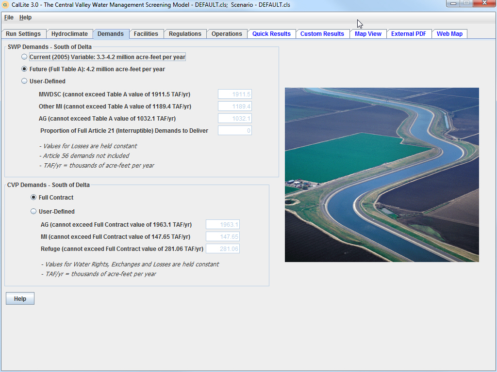

The
Demands
dashboard allows the user to make selections relating to SWP and CVP South
of Delta (SOD) demands, as follows:
-For SWP, the options are to use variable Table A demand levels, full Table A demand levels, or user-defined demands. When selecting user-defined demands, demand values can be specified for MWD, Other M&I, and AG demands. The values entered here cannot exceed the full Table A amount, and always have to be greater than 0. The user can also enter the proportion of Article 21 interruptible demands to deliver. When selecting user-defined demands, values for losses are held constant, and Article 56 (carryover) demands are set = 0.
-For CVP, the options are to use full contract demands or user-defined demands. When selecting user-defined demands, demand values can be specified for AG, M&I, and Refuge demands. The values entered here cannot exceed the full contract amount, and always have to be greater than 0. When selecting user-defined demands, values for losses are held constant, and water rights and exchange contractor deliveries cannot be altered.
